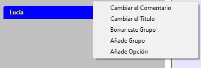
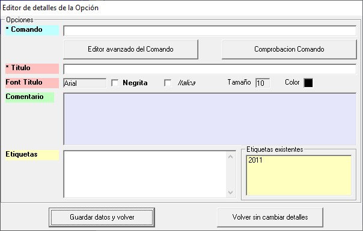

Añadir una Opción a un Grupo
Se puede crear una Opción utilizando una de las opciones del menú emergente asociado a un Grupo. Para ello, en el panel izquierdo, nos situamos sobre el Grupo (banda azul) donde queremos crear la nueva Opción, pulsamos el botón derecho del ratón y aparecerán el menú siguiente:

Elegimos "Añade Opción" y aparecerá el formulario "Editor de detalles de la Opción" documentado en "Arrastrar y soltar".

NOTA: verá que en la lista "Etiquetas existentes" aparecen las etiquetas que ya están asociadas a alguna Opción. Si hace doble-click en alguna de ellas, se copiará a la caja de texto "Etiquetas". No se preocupe si aparece una misma etiqueta más de una vez en "Etiquetas": al hacer "Guardar datos y volver" se hace una limpieza.